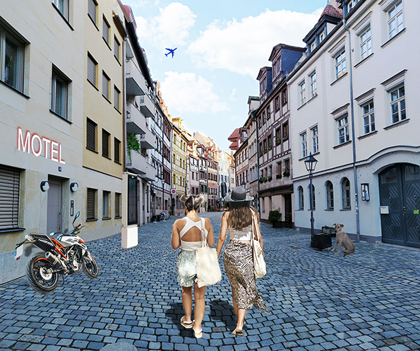

U ovoj vježbi smo trebali napraviti vlastiti font u programu FontForge i isprobati ga u Wordu i Inkscape-u.
U ovo vježbi smo trebali u Gimp-u nacrtati Breizove krivulje u koordinatnom sustavu i uklopiti ih u slova vlastitog fonta s prošle vježbe. Prva slika je vježba rađena po videu, a druga vlastiti primjer.

.jpg)
U ovoj vježbi smo se bavili crtanjem slobodnih vektorskih okvira prema predlošcima slika koje smo uveli u vektorski program, u ovom slučaju Gimp. Također, koristili smo boje koje smo kreirali u grupi Swatch. Prva slika je vježba rađena po videu, a druga vlastiti primjer.

.jpg)
U ovoj vježbi smo korisitili tehnike spajanja i izrezivanja objekata i primijenili različite vrste gradijenata i transparencije. Prva slika je vježba rađena po videu, a druga vlastiti primjer.

.jpg)
Ovo je prvi projektni zadatak u kojem smo kombinirali sve tehnike iz prošlih vježbi i koristili vlastiti font iz prve.

U ovoj vježbi bavili smo se retuširanjem fotografija u Adobe Photoshopu.
.jpg)
U ovoj vježbi smo se bavili tehnikom koloriranja crno-bijelih slika, te selekcijama i maskama.
.jpg)
U ovoj vježbi smo se bavili fotomontažom odnosno kombiniranjem više fotografija izrezivanjem dijelova iz različitih slika i spajanjem u jednu cijelinu.
U ovom projektnom zadatku smo kombinirali sve tehnike iz prošli vježbi kako bi kreairali završnu sliku.
U ovoj vježbi smo se bavili osnovama obrade video materijala i uvođenjem multimedije u video projekt. Rezultat vježbe je kinemagraf čija je karakteristika spajanje statične i pokretne slike. Radili smo u programu ShotCut.

.gif)
U ovoj vježbi smo se bavili video obradom, a u to spada rezanje i spajanje video isječaka u jedan, video efekti, brisanje i dodavanje zvuka i dodavanje i obrada teksta.